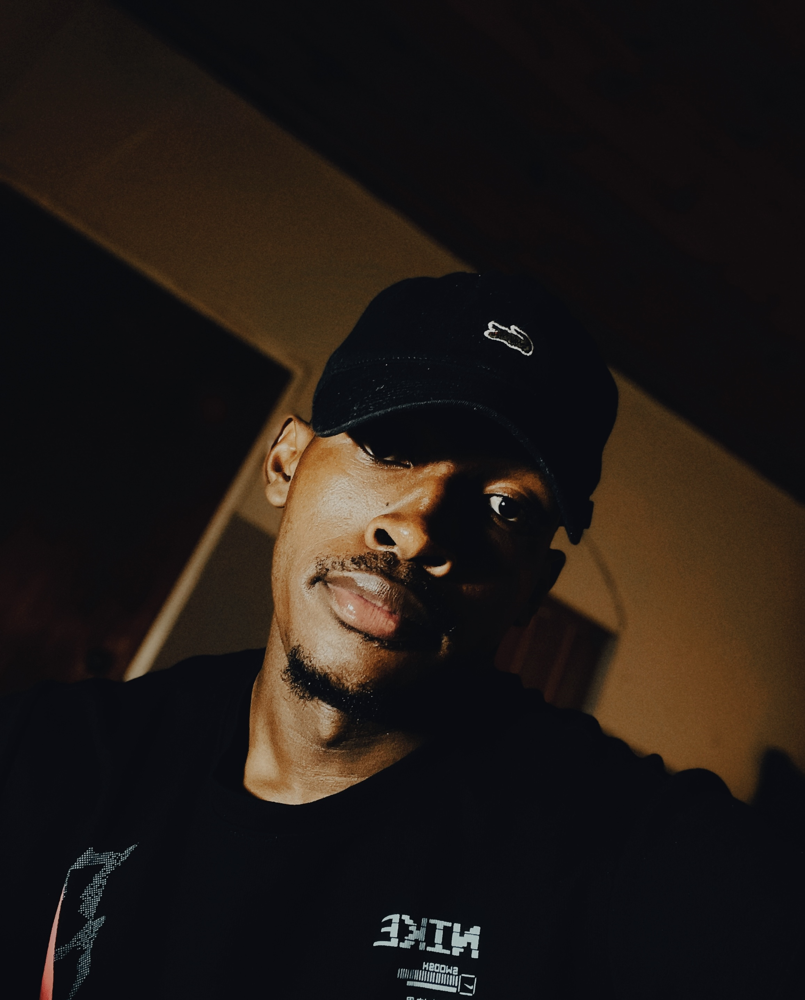

Knowledge Moyane (Jay)
Candidate for Head of Sports (Soccer) 2026 - UJ Promaths Alumni
Current Head of Media and Marketing
About Me
As the former Head of Media and Marketing for UJ Promaths Alumni, I have demonstrated exceptional leadership, creativity, and dedication to promoting our organization's mission and activities. My experience has prepared me to take on the role of Head of Sports (Soccer) and bring the same level of excellence to our sports initiatives.
Personal Information
Birthday
09 October
Current Course
BSc in Computer Sciences and Informatics
Hobbies & Interests
Gaming, Coding for fun, Playing soccer
My Motivation
My passion for soccer and my commitment to the UJ Promaths Alumni community drive my desire to serve as Head of Sports. Having witnessed the power of sports to bring people together, foster teamwork, and promote healthy living, I am excited about the opportunity to enhance our soccer program.
If elected, I will focus on expanding participation, organizing competitive events, and creating an inclusive environment where every member feels valued and motivated to contribute to our soccer community.
Support My CampaignMy Achievements as Head of Media and Marketing
Increased Engagement
Grew social media following by 6.9% through targeted campaigns and engaging content strategies.
Expanded Reach
With the team, Developed partnerships with influential alumni organizations to cross-promote events and initiatives.
Enhanced Media Presence
Produced high-quality promotional content that showcased organization events and increased attendance by 9%.
Brand Development
Created a consistent visual identity that increased brand recognition across all platforms.
My Personal Achievements
- 2017: Player of the Tournament, Vodacom Challenge
- 2016: Player of the Tournament, Build It Tournament
- 2016: Midfielder of the Tournament, Build It Tournament
- 2020: Second Runner for Player of the Season (Castle League)
- 2020: Matric Debate 1st Position (Department of Basic Education) | as the Team Leader
- 2021: Top Matriculant Achiever at Mavalani High School
- 2021: Top 30 Matriculant Achiever at Giyani District
- 2019: Giyani Science Center, Science Innovation (1st position for Physical Sciences & 4th for Maths)
- 2022: Top 1% UJ Academical Achievers (Medical Laboratory sciences)
- 2023: Top 1% UJ Academical Achievers (Computer Sciences)
My Vision for Soccer
As Head of Sports (Soccer), I will implement a comprehensive program that includes:
- Regular training sessions for all skill levels
- Intramural leagues and tournaments
- Alumni vs. current student matches
- Community outreach through soccer and find means of giving back to the society
- Partnerships with local soccer organizations
My media experience will be invaluable in promoting these initiatives and ensuring high participation rates.
My Media Gallery

My Picture
Incase you do not know me.

Promaths Engagement
Connecting with alumni members during crossnight.
Campaign Video Statement
My vision for the soccer program at UJ Promaths Alumni.